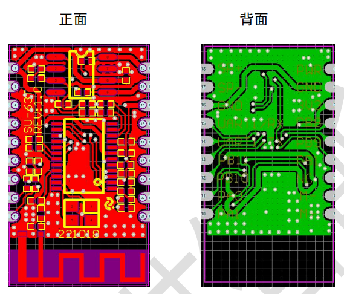
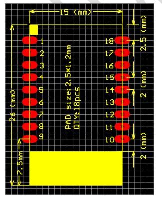

SU-63T
简介
概述
SU-63T 是一款蓝牙双模智能语音 IoT 模组。芯片集成 32 位 CPU 处理器，包含 UART、 GPIO、SPI、I2C、ADC、功放等外围接口；内置 NPU、浮点运算单元。依托我司在语音识 别技术上的积累和算法的不断优化和创新，将本地识别算法与芯片架构深度融合，为客 户提供 Turnkey 语音识别方案。该模组采用 MCU 加语音识别专用 NPU 架构内核，同时 芯片内置 SRAM 和 FLASH，只需少量外围器件即可形成完整解决方案。该方案支持 50 条 本地指令离线 3-5 米远场识别，支持 RTOS 轻量级系统，并提供简洁友好的客制化工具， 可快速部署到不同的终端产品上。 适用于用于智能家电、智能家居、智能玩具、无线音 视频、工业控制、医疗监护等广泛的物联网领域。
功能框图：

外观尺寸
 
特性
集成 32 位处理器，工作频率 240MHz，内置 NPU、浮点运算单元
内置 1MB Flash
4 级中断优先级
集成 3 路全双工 UART, UART0 和 UART1 支持 DMA 模式
集成 1 个 10 比特 ADC
集成 1 个高速 SPI 接口，支持主从模式
集成 1 个 SD 卡主模式控制器
集成 1 个 I2C 控制器，支持主从模式
集成 GPIO 控制器，最多支持 9 个 GPIO
集成 1 路全速 USB2.0 OTG 控制器
集成 4 路多功能 16 位定时器，支持 capture 和 PWM 模式
集成 2 路用于马达控制的 PWM
集成 Touch Sensor 控制器
两路 16 位 DAC，SNR>=95dB
一路 16 位 ADC，SNR〉=90dB
采样率：8/11.025/16/22.05/24 /32/44.1/48KHz
1 路模拟 MIC 输入，内置 MIC 偏置电压输出
支持 V5.1+BR+EDR+BLE
支持 Class1、2、3 发送功率
支持 GFSK、π/4 DQPSK 包型
支持 6dBm 发射功率
接收灵敏度-90dBm
快速 AGC 支持增强型动态范围
支持 a2dp/avctp/avdtp/avrcp/hfp/spp/smp/att/gap/gatt/rfcomm/sdp /l2cap
单电源供电，VBAT 2.5V 到 5.5V
内置 LDO 用于芯片数字和模拟部分供电
提供完整基于 RTOS 的 SDK
支持快速便捷的 UART 等控制协议开发
封装: SMD18